Interactive 3D Segmentation Repair with Image-Foresting Transform, Supervoxels and Seed Robustness
Anderson Tavares
Orientador: Prof. Paulo A. V. Miranda
Instituto de Matemática e Estatística
Universidade de São Paulo
Junho de 2017


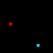
Corrigir Segmentação Automática
Continuar Segmentação Interativa
Editar Segmentação
Problema reverso
Random Walks
El-Zehiri et al. 2013

Harrison et al. 2013

Image-Foresting Transform
Miranda et al. 2011

Usuários Robôs
Spina et al. 2016

Superfícies Paramêtricas
Jackowski et al. 2003

Valenzuela et al. 2015

Graph Cut
Yang e Choe. 2011

Interação Humano-Computador
Karimov et al. 2015

Imagem Digital

 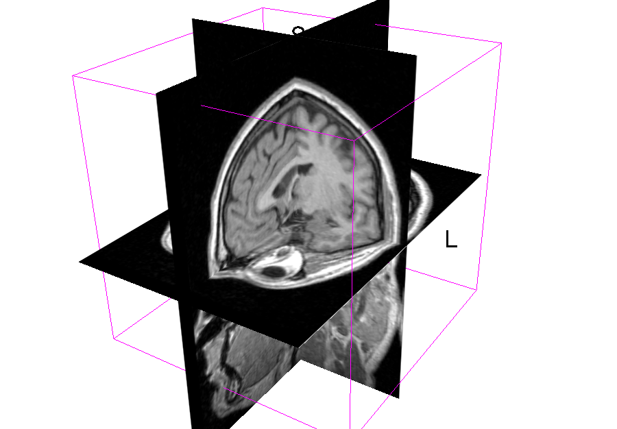
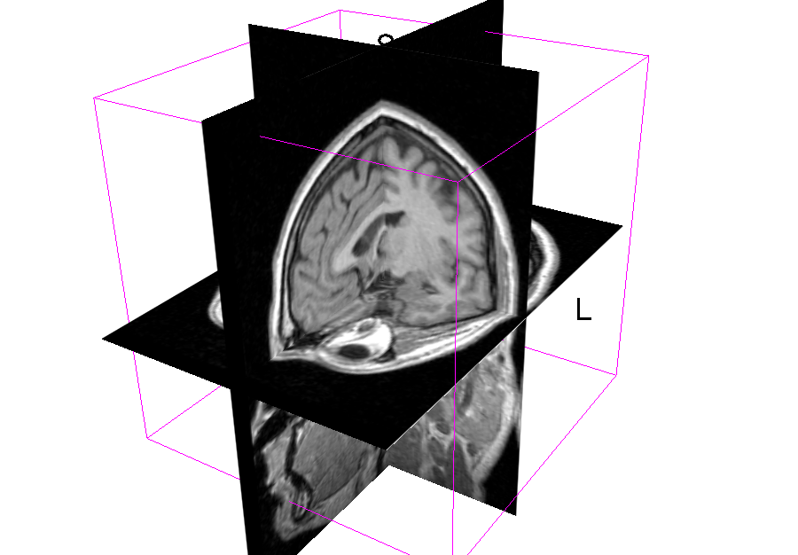
Grafo
Adjacência


Imagem como Grafo


Segmentação Corte Família Energia Sementes


Caminho

Mapa de Predecessores

Floresta Geradora

Componentes
Directed Connected Component
Strongly Connected Component
Tarjan


Conexidade
Caminho ótimo:

Floresta Geradora de Caminhos Ótimos (OPSF)
Floresta
é ótimo completo
Função Suave
Transformada Imagem-Floresta (IFT)
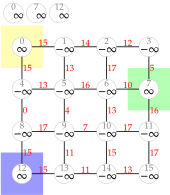
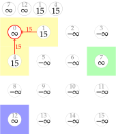
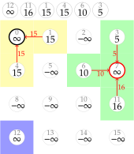
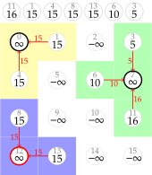
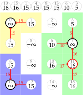
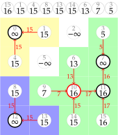
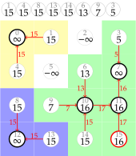
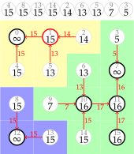
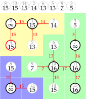
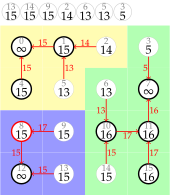
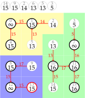
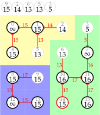
 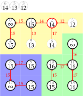
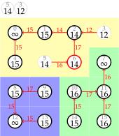
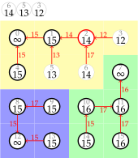
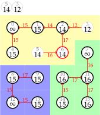

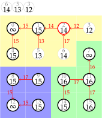
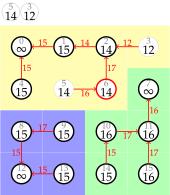
Polaridade de borda
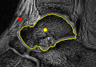 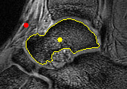Restrições de forma
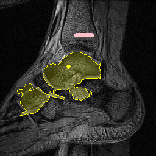
Conexidade
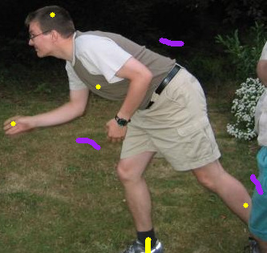 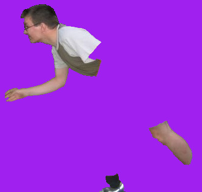Oriented Image-Foresting Transform (OIFT)
-minimizador
Oriented Relative Fuzzy Connectedness (ORFC)
| Calculando | |
|---|---|
| 1 | Obter mapa de conexidade com por IFT |
| 2 | Criar de , onde |
| 3 | Retornar |
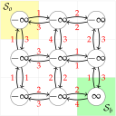
 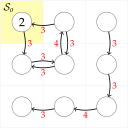
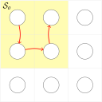
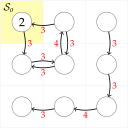
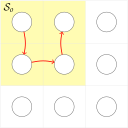
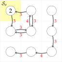
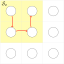
-minimizador
ORFC
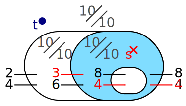Outra solução
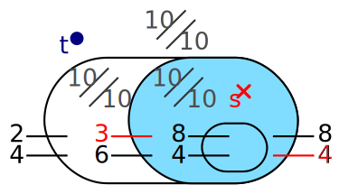OIFT
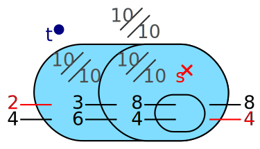Robustez de Sementes
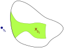
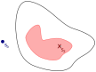
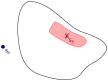
Classes de Equivalência
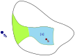
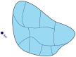
Núcleo
?
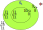 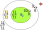 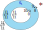?
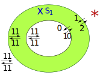ORFC
 OIFT
OIFT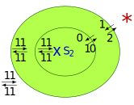ORFC=OIFT
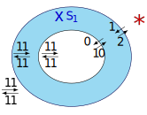NORFC
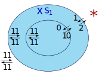NOIFT
?
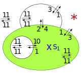ORFC
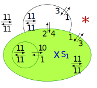CoH(OIFT)
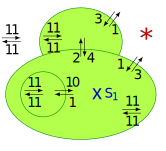OIFT
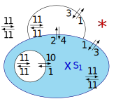NORFC
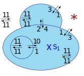NOIFT
| Calculando | |
|---|---|
| 1 | Obter mapa de conexidade com por IFT |
| 2 | Criar de , onde |
| 3 | Retornar |
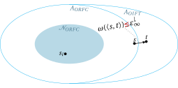
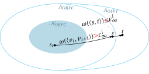
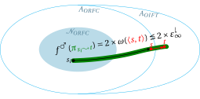
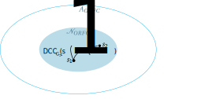
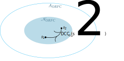
Núcleo do ORFC
| Calculando | |
|---|---|
| 1 | Obter mapa de conexidade com por IFT |
| 2 | Criar de , onde |
| 3 | Retornar (Tarjan - Linear) |
| Calculando | |
|---|---|
| 1 | Obter mapa de conexidade com por IFT |
| 2 | Criar de , onde |
| 3 | Retornar SCCs contendo sementes de objeto |
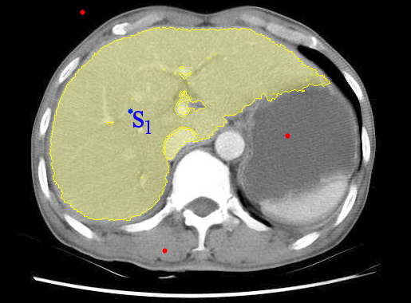
Núcleo do OIFT
ORFC


OIFT
Grafo Adjacência de Regiões (RAG)
Coeficiente de Robustez
Dice
Resultados Experimentais
ORFC
OIFT
NORFC (RC = 99,95%)
NOIFT (RC = 96,23%)
ORFC
OIFT
NORFC (RC = 97,89%)
NOIFT (RC = 89,06%)

ORFC
OIFT
NORFC (RC = 98,60%)
NOIFT (RC = 96,01%)

NORFC (RC = 98,60%)
NOIFT (RC = 96,01%)
Graph Cut
Shrinking bias
| Calculando | |
|---|---|
| 1 | em |
| 2 | em |
| 3 | Retornar em |
OIFT
RFC+GC
ORFC
NORFC
ORFC+GC
NORFC+GC
Análise de Redundância
IFT-SLIC
Máscara binária B
| Proposto () | Proposto () | ISBI2011 | ||||
|---|---|---|---|---|---|---|
| imagem# | nm | ns (‰) | nm | ns (‰) | nm | ns (‰) |
| 01 | 5 | 0.0729 | 7 | 0.0463 | 46 | 0.0657 |
| 02 | 10 | 0.0608 | 13 | 0.0463 | 35 | 0.0766 |
| 03 | 12 | 0.0729 | 12 | 0.0502 | 42 | 0.0811 |
| 04 | 15 | 0.0602 | 18 | 0.0463 | 33 | 0.0949 |
| 05 | 8 | 0.0781 | 11 | 0.0648 | 23 | 0.0443 |
| 06 | 6 | 0.0677 | 10 | 0.0463 | 15 | 0.0683 |
| 07 | 8 | 0.0677 | 10 | 0.0463 | 26 | 0.0750 |
| 08 | 15 | 0.0729 | 16 | 0.0501 | 20 | 0.0470 |
| 09 | 6 | 0.0501 | 8 | 0.0463 | 20 | 0.0672 |
| 10 | 9 | 0.0502 | 11 | 0.0405 | 36 | 0.0631 |
| Média | 9.4 | 0.0653 | 11.6 | 0.0483 | 29.6 | 0.0683 |
| Proposto () | Proposto () | ISBI2011 | ||||
|---|---|---|---|---|---|---|
| imagem# | nm | ns (‰) | nm | ns (‰) | nm | ns (‰) |
| 01 | 20 | 0.1633 | 26 | 0.1252 | 33 | 0.8230 |
| 02 | 20 | 0.1633 | 22 | 0.1379 | 28 | 1.2129 |
| 03 | 23 | 0.1516 | 21 | 0.1253 | 32 | 0.9770 |
| 04 | 19 | 0.1908 | 18 | 0.1484 | 37 | 0.6807 |
| 05 | 23 | 0.1909 | 22 | 0.1485 | 67 | 1.6071 |
| 06 | 19 | 0.1379 | 22 | 0.1253 | 34 | 1.0022 |
| 07 | 17 | 0.1516 | 19 | 0.1273 | 31 | 0.3774 |
| 08 | 17 | 0.1633 | 23 | 0.1253 | 24 | 0.4172 |
| 09 | 21 | 0.1633 | 21 | 0.1157 | 42 | 0.4365 |
| 10 | 18 | 0.1633 | 25 | 0.0936 | 30 | 0.4303 |
| Média | 19.7 | 0.1639 | 21.5 | 0.1272 | 35.8 | 0.7965 |
Publicações
Seed robustness of oriented relative fuzzy connectedness: core computation and its applications
Proceedings of SPIE on Medical Imaging. Vol. 10133. 2017.
Seed Robustness of Oriented Image Foresting Transform: Core Computation and the Robustness Coefficient
International Symposium on Mathematical Morphology and Its Applications to Signal and Image Processing. Springer, Fontainebleau-France, 2017.
A Supervoxel-Based Solution to Resume Segmentation for Interactive Correction by Differential Image-Foresting Transforms
International Symposium on Mathematical Morphology and Its Applications to Signal and Image Processing. Springer, Fontainebleau-France, 2017.